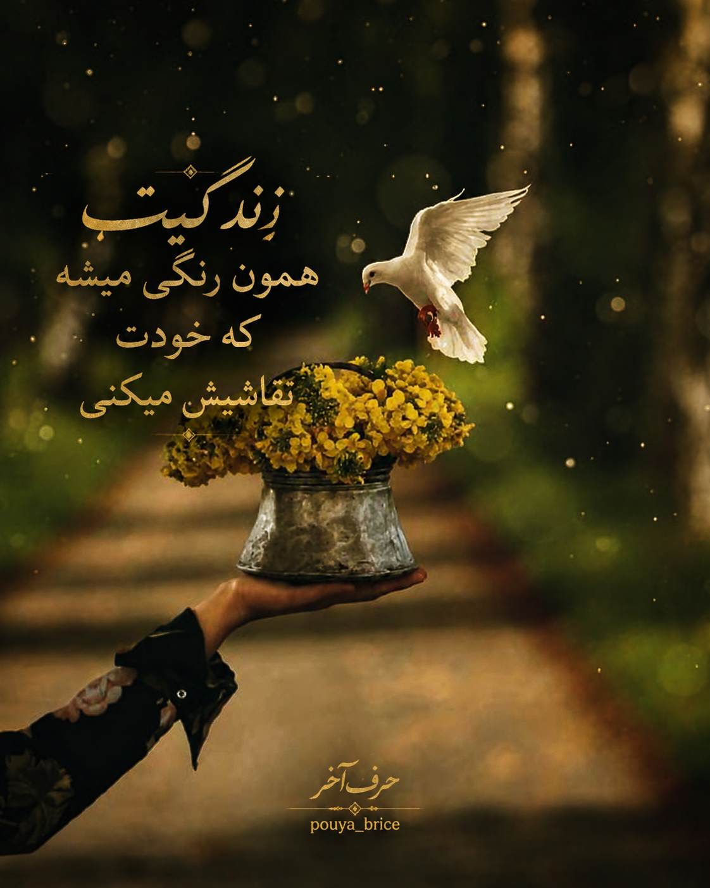

جملات زیبا درباره تجربهها، امید و مسیر زندگی

زندگی مجموعهای از لحظههاست؛ زیبا زندگی کن تا خاطرات زیبایی بسازی.
گاهی آرامترین آدمها، بزرگترین جنگها را پشت سر گذاشتهاند.
هر روز یک فرصت تازه است برای ساختن چیزی که دیروز آرزویش را داشتی.
زندگی مجموعهای از لحظههاست؛ پس زیباترین لحظهها را بساز و قدرشان را بدان.
گاهی سادهترین اتفاقها، قشنگترین خاطرات زندگی را میسازند.
زندگی کوتاهتر از آن است که تمام روز را نگران فردایی باشیم که هنوز نیامده است.
آرامش واقعی زمانی پیدا میشود که خودت را همانگونه که هستی بپذیری.
هر پایان، میتواند شروعی تازه برای یک مسیر زیباتر باشد.
بزرگترین درسهای زندگی، گاهی از سختترین روزها به دست میآیند.
زندگی مسابقه نیست؛ سفری است که باید از مسیرش لذت برد.
آدمهای قوی کسانی نیستند که مشکل ندارند؛ کسانی هستند که با مشکلات میجنگند.
گاهی باید آرامتر قدم برداری تا زیباییهای مسیر را ببینی.
خوشبختی در داشتن همه چیز نیست؛ در دیدن زیبایی چیزهایی است که داری.
هر روز یک صفحه جدید از کتاب زندگی توست؛ زیبا بنویس.
گذشته را نمیتوان تغییر داد، اما میتوان آینده را بهتر ساخت.
زندگی به کسانی فرصت میدهد که امیدشان را از دست نمیدهند.
گاهی سکوت، بهترین پاسخ به شلوغیهای بیمعنی دنیاست.
انسان با تجربههایش رشد میکند، نه فقط با سالهایی که زندگی میکند.
گاهی یک تغییر کوچک در نگاه ما، میتواند تمام زندگی را زیباتر کند.
زندگی یعنی یاد بگیری از هر اتفاق، چیزی برای رشد خودت پیدا کنی.
آدمی که امید دارد، حتی در تاریکترین روزها هم راهی برای ادامه پیدا میکند.
زیبایی زندگی در لحظههایی است که با تمام وجود احساسشان میکنیم.
هیچ روزی تکراری نیست؛ اگر با چشم تازه به آن نگاه کنی.
گاهی باید گذشته را رها کرد تا جا برای اتفاقهای بهتر باز شود.
زندگی به اندازهای زیباست که ما تصمیم میگیریم آن را ببینیم.
آرامش بزرگترین ثروتی است که یک انسان میتواند داشته باشد.
هر تجربهای، حتی سختترین آنها، چیزی برای یاد دادن دارد.
موفقترین آدمها کسانی هستند که از اشتباهاتشان درس میگیرند.
گاهی باید کمتر فکر کرد و بیشتر زندگی کرد.
زمان با ارزشترین دارایی انسان است؛ آن را صرف چیزهای مهم کن.
زندگی زیبا میشود وقتی یاد بگیری برای چیزهای کوچک خوشحال باشی.
هیچ مسیری همیشه آسان نیست، اما هر مسیر میتواند تو را قویتر کند.
خودت را با دیگران مقایسه نکن؛ هر انسانی داستان خودش را دارد.
گاهی بهترین تصمیم زندگی، شروع دوباره با تجربههای گذشته است.
زندگی به ما یاد میدهد که هیچ چیزی همیشگی نیست؛ پس قدر لحظهها را بدانیم.
آدمها با امید زنده میمانند و با تلاش به رویاهایشان میرسند.
زیباترین فصل زندگی زمانی شروع میشود که خودت را باور کنی.
گاهی یک لبخند ساده میتواند سختترین روز را زیباتر کند.
زندگی پر از انتخاب است؛ انتخاب کن چیزی باشی که به آن افتخار میکنی.
هر روز فرصتی تازه است برای ساختن داستانی بهتر از دیروز.
آدم آرام کسی نیست که مشکل ندارد؛ کسی است که یاد گرفته با مشکلات کنار بیاید.
گاهی مسیر طولانی است، اما ارزش رسیدن به مقصد را دارد.
زندگی زمانی زیباست که به جای حسرت گذشته، برای آینده تلاش کنیم.
هیچ انسانی کامل نیست؛ اما هر کسی میتواند بهتر از گذشته خودش باشد.
آرامش را در چیزهایی پیدا کن که قلبت را خوشحال میکنند.
بزرگترین پیروزی، غلبه بر ترسها و ساختن خود واقعی است.
گاهی باید مکث کنی، نفس بکشی و زیبایی همین لحظه را ببینی.
زندگی یک فرصت است؛ آن را با عشق، امید و مهربانی بساز.